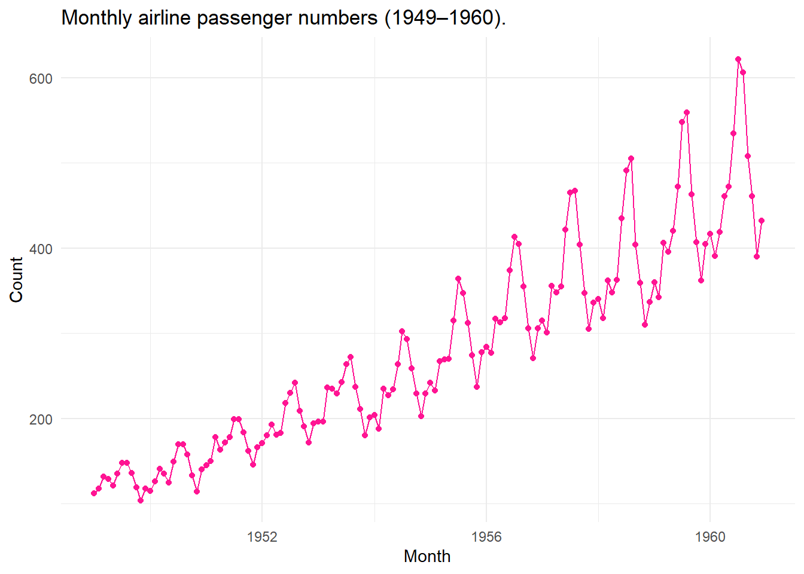
The Temporal Shift
Time Series Portfolio
Overview
Portfolio Summary
Overview
Welcome to my portfolio for Time Series Analysis. This document showcases my learning progression, statistical understanding, computational applications, and reflections across the course.
Portfolio Structure
Reflective Commentary
Learning Achievements
[cite: 1]
Methodological Challenges
[cite: 1]
Ethical and Reproducibility Considerations
[cite: 1]
Future Areas for Development
[cite: 1]
AI Use Log
| Date | Tool Used | Prompt / Task Description | Link to Conversation | Verification & Changes Made |
|---|---|---|---|---|
| YYYY-MM-DD | ChatGPT / Claude | Debugging R code for model fit | Link | Checked output against manual calculations[cite: 1] |
Section 1
Foundations
Learning outcomes
Explain what a time series is and how it differs from cross-sectional data, and say why temporal dependence calls for its own methods.
Treat an observed series as one realisation of a stochastic process.
Explain what forecasting is, judge when a process is predictable, and keep forecasts, goals and plans separate.
Match a forecast horizon to the decision it supports, and read a forecast as a random variable rather than a single number.
Identify trend, seasonality, cycle and irregular variation in a plot, and describe the shapes each of them takes in practice.
Produce the four benchmark forecasts, and evaluate any competing model against them on data it has not seen.
Use the lag and lead operators, and the algebra built on them, to write models compactly.
Define weak stationarity, say which of its conditions a given series violates, and choose a transformation that restores it.
Define white noise, MA, AR, ARMA, ARIMA and SARIMA processes, derive their basic properties, and identify them from an ACF and a PACF.
Fit, diagnose and forecast these models in R, following the workflow of Box and Jenkins, and test residuals against the white noise standard.
Explain volatility clustering and fit ARCH and GARCH models to it
What is a time series?
Time series is a single measurement taken at multiple points across time. Technically we are modelling the same thing over and over again (this makes sense as to why there is sequential correlation).
Note
Time series model dependence through sequential observations.
Assumption
Equally spaced measurements.
Assumption
Autocorrelation across time.
Qualitative, Continuous and Discrete Series
Example: Continuous series
Figure 1 plots the number of monthly airline passengers over a 12 year period. This figure clearly illustrates the concepts of seasonality and trend.
Example: Discrete series
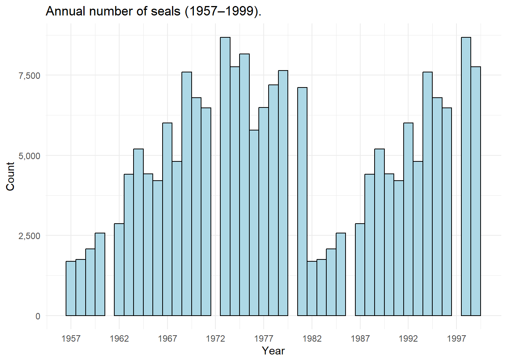
Figure 2 plots the changing number of observed seals over a period of 25 years.
What to do when you have missing observations in a time series?
In discrete time series to deal with missing observations you can express the model in state-space form (ARIMA or Structural Time Series). For a missing observation \(y_t\), skip the update step in the kalman filter and only run the prediction step. The likelihood is evaluated only over the observed time points.
Kalman filtering
Kalman filtering (linear quadratic estimation) is an algorithm that uses a series of measurements over time to estimate unknown variables, by estimating a joint probability distribution over the variables for each time-step.
In continuous time series, missing observations look like irregularly spaced sampling intervals. You can model the underlying system using Stochastic Differential Equations (CARMA) or you can aggregate the irregular time steps into regular, discrete intervals.
Temporal granularity and the aggregation effect
Aggregating up can either smooth out high-frequency structure (stock returns, etc) or can reveal low-frequency structure (Sales, etc).
One realisation of a stochastic process
Noise in the data introduces different realisations. If your model fits one dataset perfectly then it is overfitting.
The Forecasting Problem
What is forecasting?
Forecasting is a prediction about what will happen in the future based on evidence that we have (with some level of uncertainty). This uncertainty gives rise to forecast intervals (not just point estimates). Goal setting is what we want to happen in the future. Planning helps us reach our goal.
Note
A series can only be called predictable if the interval and horizon are stated.
Forecast \(\rightarrow\) Goal \(\rightarrow\) Plan \(\rightarrow\) Implementation \(\rightarrow\) Outcome \(\rightarrow\) Forecast …
A forecast horizon is how far into the future you try and predict values. When looking at time series data we are looking for stable, informative patterns (not just a lot of data).
A random walk is a process where memory is permanent. Every future shock accumulates endlessly resulting in forecast variance growing linearly. A stationary AR is a process where memory decays geometrically. Shocks dies out, forcing the forecast back to the process mean.
Stationary AR(1) process, \(h\) step forecast error variance:
\[ \text{Var}(e_{T+h}) = \sigma^2 \frac{1-\phi^{2h}}{1-\phi^2} \rightarrow \frac{\sigma^2}{1-\phi^2} \quad \text{as } h \rightarrow \infty \]
Note
Forecasts are random variables.
Exploring a Series
The classical decomposition
\[ \begin{aligned} \text{Additive:} \quad y_t &= T_t + S_t + C_t + I_t \\ \text{Multiplicative:} \quad y_t &= T_t \cdot S_t \cdot C_t \cdot I_t \end{aligned} \] The nature of the seasonality in a series (additive, multiplicative or drifting) determines whether log transformation or differencing are required.
Two ways of looking at a series
- Time domain - this looks at previous observations
You would use time domain when estimating predictive conditional expectations (forecasting at time \(t+1\) given \(t, t-1\)), when dealing with short sample sizes.
A lag is the separation between two observations measured in time units.
Note
Plotting a series against its own first lag is the simplest possible diagnostic for dependence.
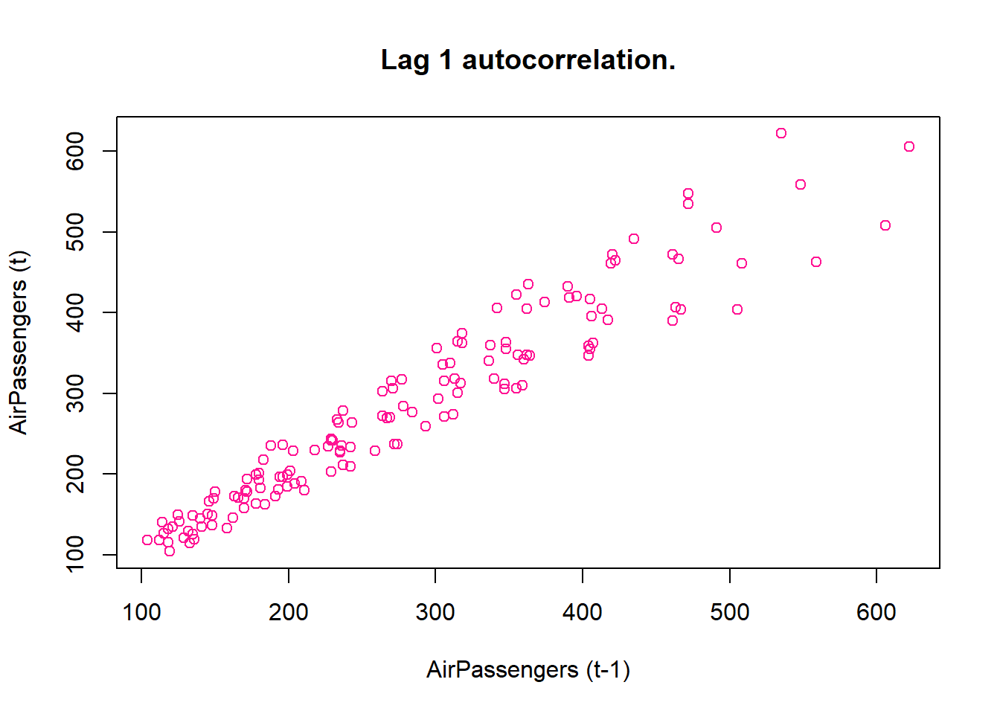
- Frequency domain - this looks at previous trends
You would use frequency domain when identifying hidden cycles/patterns or when analysing long-memory dynamics.
The components of a series
Trend is the long run direction of movement. Seasonality is th pattern that repeats at a fixed and known interval. Cycles are long oscillations with no fixed length. Irregular variation (noise) is random variation unexplained by the former.
Time Series Analysis in R
AirPassengers dataset
Click to toggle source code
# Run once — install anything missing
pkgs <- c("tidyverse", "tsibble", "feasts", "fable", "timetk",
"modeltime", "kableExtra", "here")
install.packages(pkgs[!pkgs %in% installed.packages()[, "Package"]])Handling dates and aggregation
AirPassengers is already a time series object but to convert a dataset to a time series object you use: ts(c(), start = c(year, month), frequency = #obs/unit time)
Click to toggle source code
# Read in data:
data(AirPassengers)
# View(AirPassengers)
print(AirPassengers) Jan Feb Mar Apr May Jun Jul Aug Sep Oct Nov Dec
1949 112 118 132 129 121 135 148 148 136 119 104 118
1950 115 126 141 135 125 149 170 170 158 133 114 140
1951 145 150 178 163 172 178 199 199 184 162 146 166
1952 171 180 193 181 183 218 230 242 209 191 172 194
1953 196 196 236 235 229 243 264 272 237 211 180 201
1954 204 188 235 227 234 264 302 293 259 229 203 229
1955 242 233 267 269 270 315 364 347 312 274 237 278
1956 284 277 317 313 318 374 413 405 355 306 271 306
1957 315 301 356 348 355 422 465 467 404 347 305 336
1958 340 318 362 348 363 435 491 505 404 359 310 337
1959 360 342 406 396 420 472 548 559 463 407 362 405
1960 417 391 419 461 472 535 622 606 508 461 390 432Click to toggle source code
# Sum by year:
annual_sum <- aggregate(AirPassengers, FUN = sum)
# Mean by year:
annual_mean <- aggregate(AirPassengers, FUN = mean)
print(annual_sum)Time Series:
Start = 1949
End = 1960
Frequency = 1
[1] 1520 1676 2042 2364 2700 2867 3408 3939 4421 4572 5140 5714Click to toggle source code
print(annual_mean)Time Series:
Start = 1949
End = 1960
Frequency = 1
[1] 126.6667 139.6667 170.1667 197.0000 225.0000 238.9167 284.0000 328.2500
[9] 368.4167 381.0000 428.3333 476.1667Helper conversions
Click to toggle source code
t <- time(AirPassengers)
# Extract Year and Month
years <- floor(t)
months <- round(12 * (t - years)) + 1
head(data.frame(Decimal = as.numeric(t), Year = years, Month = months)) Decimal Year Month
1 1949.000 1949 1
2 1949.083 1949 2
3 1949.167 1949 3
4 1949.250 1949 4
5 1949.333 1949 5
6 1949.417 1949 6Subsetting with window()
Click to toggle source code
# Extract only the second half of 2023
sub_ts <- window(AirPassengers, start = c(1950, 7), end = c(1955, 10))
print(sub_ts) Jan Feb Mar Apr May Jun Jul Aug Sep Oct Nov Dec
1950 170 170 158 133 114 140
1951 145 150 178 163 172 178 199 199 184 162 146 166
1952 171 180 193 181 183 218 230 242 209 191 172 194
1953 196 196 236 235 229 243 264 272 237 211 180 201
1954 204 188 235 227 234 264 302 293 259 229 203 229
1955 242 233 267 269 270 315 364 347 312 274 Lags and Differences
Click to toggle source code
# Shift the time index forward by 1 period (does not move the values)
lagged_ts <- stats::lag(AirPassengers, k = -1)
# First-order differencing (removes linear trend)
diff_ts <- diff(AirPassengers, differences = 1)
# Seasonal differencing (removes a 12-month seasonal pattern)
seasonal_diff_ts <- diff(AirPassengers, lag = 12)
diff_ts Jan Feb Mar Apr May Jun Jul Aug Sep Oct Nov Dec
1949 6 14 -3 -8 14 13 0 -12 -17 -15 14
1950 -3 11 15 -6 -10 24 21 0 -12 -25 -19 26
1951 5 5 28 -15 9 6 21 0 -15 -22 -16 20
1952 5 9 13 -12 2 35 12 12 -33 -18 -19 22
1953 2 0 40 -1 -6 14 21 8 -35 -26 -31 21
1954 3 -16 47 -8 7 30 38 -9 -34 -30 -26 26
1955 13 -9 34 2 1 45 49 -17 -35 -38 -37 41
1956 6 -7 40 -4 5 56 39 -8 -50 -49 -35 35
1957 9 -14 55 -8 7 67 43 2 -63 -57 -42 31
1958 4 -22 44 -14 15 72 56 14 -101 -45 -49 27
1959 23 -18 64 -10 24 52 76 11 -96 -56 -45 43
1960 12 -26 28 42 11 63 87 -16 -98 -47 -71 42Figure 3 illustrates the autocorrelation between AirPassengers and its lag 1.
Combing series
Click to toggle source code
ts_a <- window(AirPassengers, start = c(1950, 1), end = c(1955, 12))
ts_b <- window(AirPassengers, start = c(1955, 1), end = c(1956, 12))
# Union: keeps full range, fills gaps with NA
combined_union <- ts.union(ts_a, ts_b)
# Intersect: keeps only the overlapping months
combined_intersect <- ts.intersect(ts_a, ts_b)
combined_intersect ts_a ts_b
Jan 1955 242 242
Feb 1955 233 233
Mar 1955 267 267
Apr 1955 269 269
May 1955 270 270
Jun 1955 315 315
Jul 1955 364 364
Aug 1955 347 347
Sep 1955 312 312
Oct 1955 274 274
Nov 1955 237 237
Dec 1955 278 278Missing data
Click to toggle source code
has_na <- anyNA(AirPassengers)
cat("Contains missing values:", has_na, "\n")Contains missing values: FALSE Click to toggle source code
# Simple linear interpolation for isolated gaps (base R, no extra packages)
ts_with_gap <- AirPassengers
ts_with_gap[5] <- NA
ts_filled <- ts(approx(time(ts_with_gap),
ts_with_gap,
xout = time(ts_with_gap))$y,
start = start(ts_with_gap),
frequency = frequency(ts_with_gap))
ts_filled Jan Feb Mar Apr May Jun Jul Aug Sep Oct Nov Dec
1949 112 118 132 129 132 135 148 148 136 119 104 118
1950 115 126 141 135 125 149 170 170 158 133 114 140
1951 145 150 178 163 172 178 199 199 184 162 146 166
1952 171 180 193 181 183 218 230 242 209 191 172 194
1953 196 196 236 235 229 243 264 272 237 211 180 201
1954 204 188 235 227 234 264 302 293 259 229 203 229
1955 242 233 267 269 270 315 364 347 312 274 237 278
1956 284 277 317 313 318 374 413 405 355 306 271 306
1957 315 301 356 348 355 422 465 467 404 347 305 336
1958 340 318 362 348 363 435 491 505 404 359 310 337
1959 360 342 406 396 420 472 548 559 463 407 362 405
1960 417 391 419 461 472 535 622 606 508 461 390 432Time series plots
Figure 1 plots the AirPassengers time series.
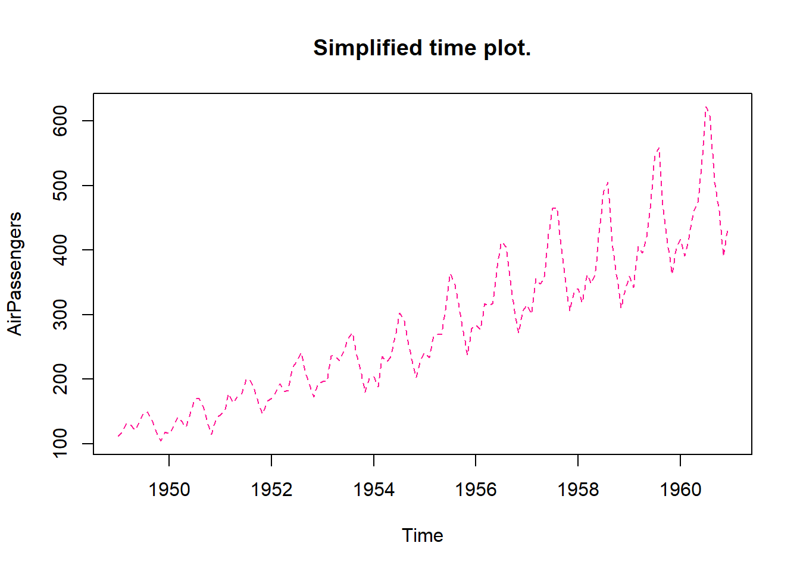
Check attributes of time series
Click to toggle source code
# Check the attributes
cat("Start:", start(AirPassengers), "\n")Start: 1949 1 Click to toggle source code
cat("Frequency:", frequency(AirPassengers), "\n")Frequency: 12 Click to toggle source code
library(ggfortify)
# A first look at structure: naive decomposition (covered in depth in Part B)
decomp <- decompose(AirPassengers)
autoplot(decomp,
ts.colour='deeppink')+
theme_minimal(base_size = 14)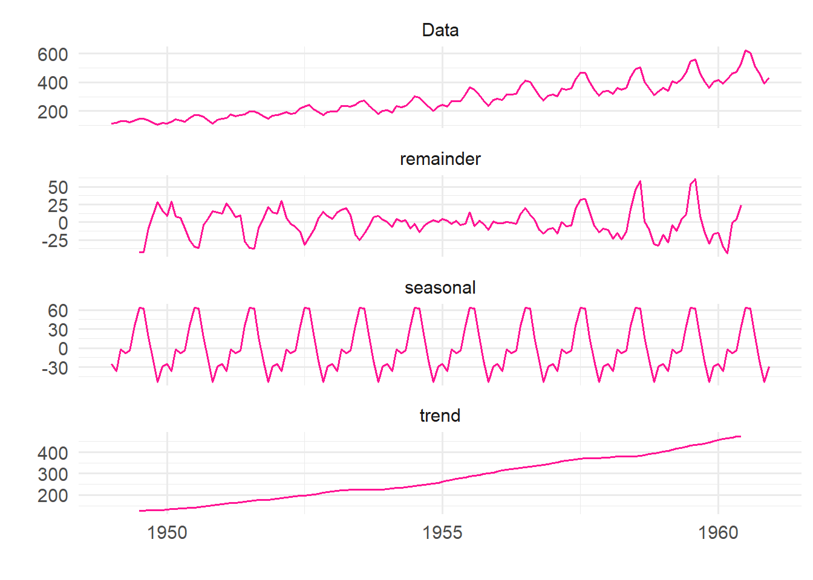
Benchmarks and Forecast Accuracy
The benchmarks applied
Mean - the average of all previous observations is carried into the future.
\[ \hat{y}_{T+h \mid T} = \bar{y} \]
Naive - the last observed value becomes the value that we take into the future.
\[ \hat{y}_{T+h \mid T} = y_T \]
Seasonal naive - the last observed seasonal pattern is carried into the future.
\[ \hat{y}_{T+h \mid T} = y_{T+h-m(k+1)} \]
Drift - The trend of the previsou observations is carried into the future.
\[ \hat{y}_{T+h \mid T} = y_T + \frac{h(y_T-y_1)}{T-1} \]
Note
Residuals are for diagnostics (validation). Forecast errors are for evaluation (test).
Cross-validation
In time series successive observations are correlated and their ordering carries information about the data generating process. When performing model validation you cannot have future observations predicting the past.
Temporal leakage (look-ahead-bias) is when future observations enter model estimation, this artificially inflates accuracy.
The forecast origin is the last observation available when the forecast is made.
Note
The test set should be at least as long as the largest horizon of interest.
Strategies
- Walk-forward validation
The forecast origin advances one step at a time.
- Expanding window validation
Every historical observation is kept. The training set grows with all past data. When older data is more informative this method reduces estimation variance.
- Sliding window validation
The training window has a fixed length. The number of training observations stays the same but the forecast origin is moved forward through time. When older data is less informative this method reduces bias.
What is the difference between interpolation and forecasting?
Note
Don’t ignore structural breaks when choosing a validation strategy.
Manual cross-validation
Cross-validation is performed using an expanding window approach.
Click to toggle source code
# Load data:
data(AirPassengers)
dat = AirPassengers
# Load libraries:
library(forecast)
n = length(dat) # no. observations
train_n = 60 # no. training data points
h = 12 # forecast horizon
# Initialise error matrix:
names = c('Mean','Naive','Seasonal naive', 'Drift')
splits = n-train_n-h+1
res = matrix(NA,
nrow=(n-h)-train_n+1,
ncol=4,
dimnames=list(NULL,names))
for (i in train_n:(n-h)) {
idx = i-train_n+1
# Subset training data:
train = window(dat,
end=c(1949+(i-1)%/%12,(i-1)%%12+1))
# Extract test data:
test = window(dat,
start=c(1949+i%/%12,i%%12+1),
end=c(1949+(i+h-1)%/%12,(i+h-1)%%12+1))
# Fit model:
fits = list(
Mean = meanf(train,h=h),
Naive = naive(train,h=h),
SNaive = snaive(train,h=h),
Drift = rwf(train,h=h,drift=TRUE)
)
# Extract rmse for each model:
rmse = sapply(fits,\(f) sqrt(mean((as.numeric(test)-as.numeric(f$mean))^2)))
# Store results:
res[idx,] = rmse
}
colMeans(res) Mean Naive Seasonal naive Drift
152.87587 74.08791 39.92124 71.96374 Cross-validation using tsCV()
Click to toggle source code
tsCV_m = tsCV(AirPassengers,meanf,h=1,window=60)
m_err = sqrt(mean(tsCV_m^2, na.rm = TRUE))
tsCV_n = tsCV(AirPassengers,naive,h=1,window=60)
n_err = sqrt(mean(tsCV_n^2, na.rm = TRUE))
tsCV_sn = tsCV(AirPassengers,snaive,h=1,window=60)
sn_err = sqrt(mean(tsCV_sn^2, na.rm = TRUE))
tsCV_d = tsCV(AirPassengers,rwf,h=1,window=60)
d_err = sqrt(mean(tsCV_d^2, na.rm = TRUE))
err_df = cbind(m_err,n_err,sn_err,d_err)
colnames(err_df) = c('Mean','Naive','Seasonal naive','Drift')
err_df Mean Naive Seasonal naive Drift
[1,] 102.0794 41.52524 40.61316 41.52524When comparing the expanding window vs the sliding window, the sliding window gives lower errors for all models except the seasonal naive model. This is because the AirPassengers dataset does not have constant variance, as seen in Figure 1.
Exercises
- Why is ordinary random k-fold cross-validation inappropriate for forecasting?
If you exclude an observation at time t-1 but use observation t, you are technically predicting the past based on future observations. Future observations must never be used when estimating a forecasting model as this violates a fundamental principal of forecasting -
- Define temporal leakage.
Future observations enter model estimation. Reported accuracy looks excellent but is unattainable in practice - the future is unknown when real forecasts are made.
- Contrast Walk_Forward, Expanding Window and Sliding Window validation.
In expanding window validation every historical observation is kept. The training set grows with all past data. In sliding window validation the training window has a fixed length. The number of training observations stays the same but the forecast origin is moved forward through time. Walk-forward validation is when the forecast origin advances one step at a time.
- When would Sliding Window outperform Expanding Window?
When data is non-stationary and older data is less informative.
- A firm refits its model daily using only the most recent 250 observations. Which strategy is this?
Sliding window
- Why must temporal ordering be preserved during validation?
Otherwise the model knows things it could not have known at forecasting time. This leads to inflated accuracy that is unattainable in practise.
Operators, Stationarity and White Noise
Lag and lead operators
Lag operator \(L_{y_{t}} = y_{t-1}\) at time \(t\) uses the observation recorded at time \(t-1\).
Note
The subscript records where a value came from, not where it is displayed.
Lead operator \(F_{y_{t}} = y_{t+1}\) at time \(t\) uses the observation recorded at time \(t+1\), \(F = L^{-1}\).
Lag and lead in R
Click to toggle source code
y <- c(3, 7, 4, 8, 5)
c(NA, y[1:(length(y)-1)]) # lag by hand[1] NA 3 7 4 8Click to toggle source code
dplyr::lag(y, n = 1) # same shift[1] NA 3 7 4 8Click to toggle source code
dplyr::lead(y, n = 1) # lead[1] 7 4 8 5 NAClick to toggle source code
lag_twice = dplyr::lag(dplyr::lag(y,n=1),n=1)
lag_twice[1] NA NA 3 7 4Click to toggle source code
dplyr::lag(y,n=2)[1] NA NA 3 7 4
Built in
lag() functions
Don’t get confused between stats::lag() and dplyr::lag(). They do different things!
Differencing
First difference: \[ \Delta{y_{t}} = y_t -y_{t-1} = (1-L)y_t, \] Seasonal difference (at lag 12): \[ \Delta_{12}y_{t} = y_t -y_{t-12} = (1-L^{12})y_t, \]
Click to toggle source code
# First differences, by hand and with diff().
y2 <- c(10, 6, 9, 12, 7)
y2 - dplyr::lag(y2, 1)[1] NA -4 3 3 -5Click to toggle source code
diff(y2) # Note: no NA added [1] -4 3 3 -5Weak and strict stationarity
When we have a multiplicative model, with expanding variance, we can log-transform it to obtain an additive model. This removes the variance of seasonality but as seen below the series still has a trend.
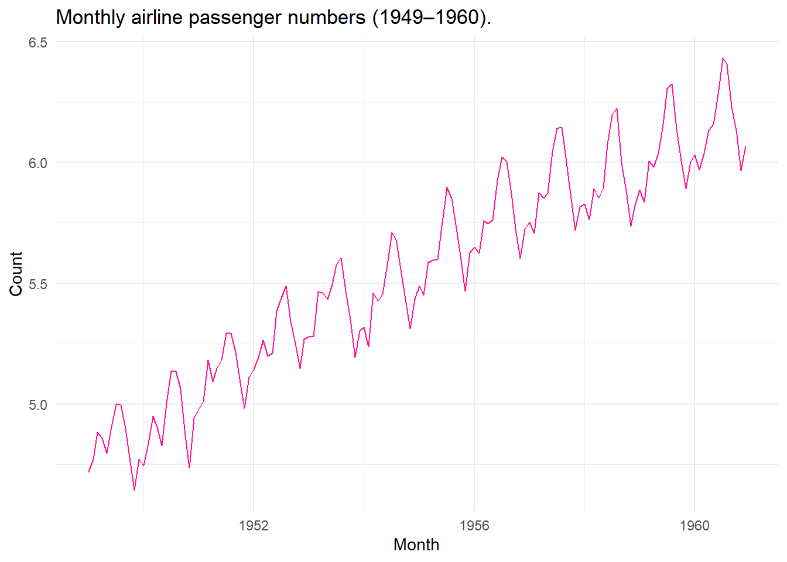
Taking differences between observations removes the linear trend and taking seasonal differences removes the seasonal trend.
Assumption
No trends present in data.
We can remove both the linear and seasonal trend in the data:
Click to toggle source code
# Check what sasonal and what regular differences are required:
nsdiffs(log_AP)[1] 1Click to toggle source code
ndiffs(log_AP)[1] 1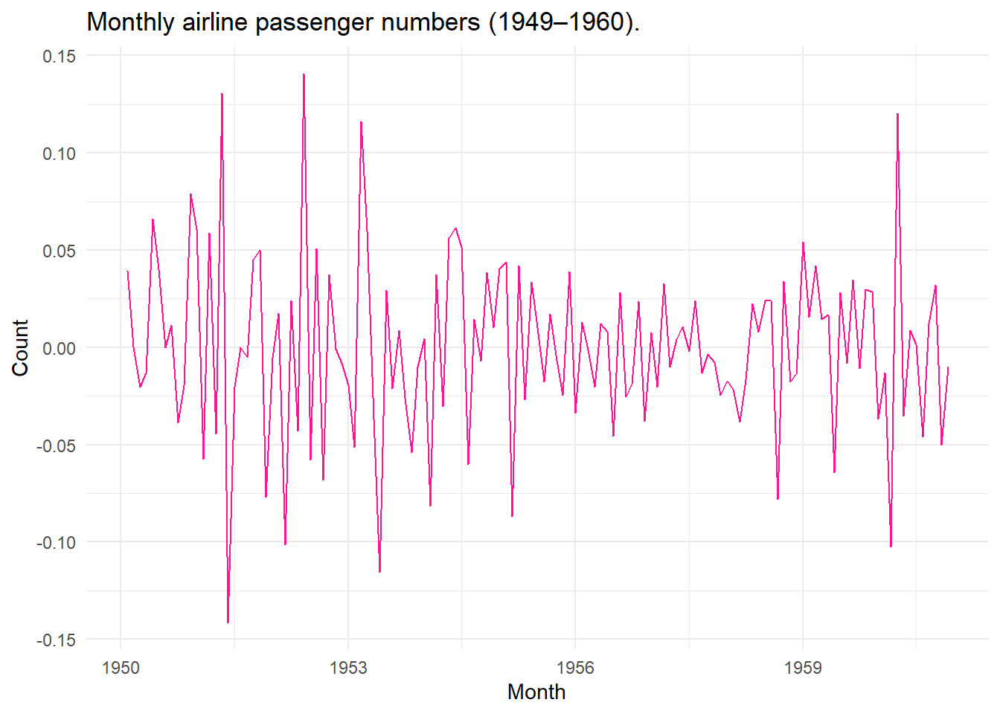
White noise
Weak white noise only requires uncorrelated observations. Strict white noise requires iid observations.
White noise means unpredictible variance, whatever the variance.
Note
Indicator variables can be included to remove trends when the series has structural breaks in it.
Linear Models for the Conditional Mean
Although white noise is uncorrelated, a weighted combination of neighbouring white noise is not.
Filtering is the process of building a new series as a weighted combination of the terms of another.
The MA(\(q\)) model
\[ y_t = \mu + \varepsilon_t + \theta_1 \varepsilon_{t-1} + \cdots + \theta_q \varepsilon_{t-q), \quad \varepsilon_t \sim WN(0,\sigma^2)}. \]
The moving average model is driven by lagged shocks not lagged observations. A MA(\(q\)) process is stationary for any values of the coefficients, since it is a finite weighted sum of white noise terms with fixed weights. The coefficients must satisfy invertibility.
The AR(\(p\)) model
\[ y_t = c + \phi_1 y_{t-1} + \cdots + \phi_p y_{t-p} + \varepsilon_t, \quad \varepsilon_t \sim WN(0,\sigma^2). \]
For the autoregressive model there is a set of correlation in the structure. The current value of a variable depends linearly on its own past. An AR(\(p\)) process models memory.
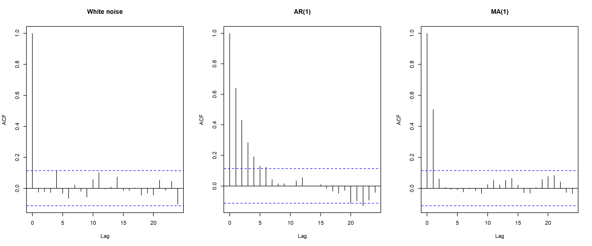
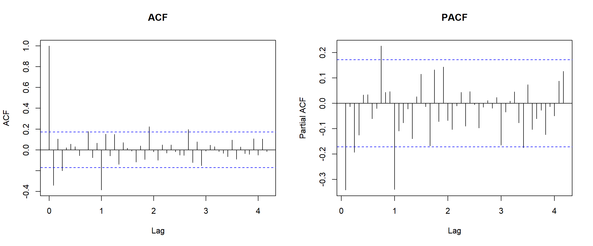
If you are observing spikes outside of the first few this indicates seasonality in the series. Figure 8 suggests that there is still seasonality present in the transformed and differenced AirPassengers dataset, however this could also just be because differencing reduced the number of observations resulting in a more noisy dataset.
The ARMA(\(q,q\)) model
The ARMA model allows for process that show persistence and short lived shocks simultaneously. The series must be stationary.
\[ y_t = c + \sum^p_{i=1} \phi_i y_{t-i} + \varepsilon_t + \sum^q_{j=1} \theta_j \varepsilon_{t-j}, \quad \varepsilon_t \sim WN(0,\sigma^2). \]
this is equivalent to: \(\phi (L)y_t = c + \theta (L) \varepsilon_t.\)
Note
ARMA models are fitted by maximum likelihood due to the moving average part (not OLS).
The ARIMA(\(p,d,q\)) model
The ARIMA model applies \(d\) difference to \(y_t\) and then fits an ARMA(\(p,q\)) to the result.
\[ \phi(L)(1-L)^dy_y = c+ \theta(L)\varepsilon_t \]
| Specification | Equivalent to |
|---|---|
| ARIMA(1,0,0) | AR(1) |
| ARIMA(0,0,1) | MA(1) |
| ARIMA(1,0,1) | ARMA(1,1) |
| ARIMA(0,1,0) | Random walk |
| ARIMA(0,1,0) with c ≠ 0 | Random walk with drift |
| ARIMA(1,1,1) | One difference, then ARMA(1,1) |
Although Table 1 illustrates the special cases of ARIMA, sometimes there is a constant included that must be taken into account.
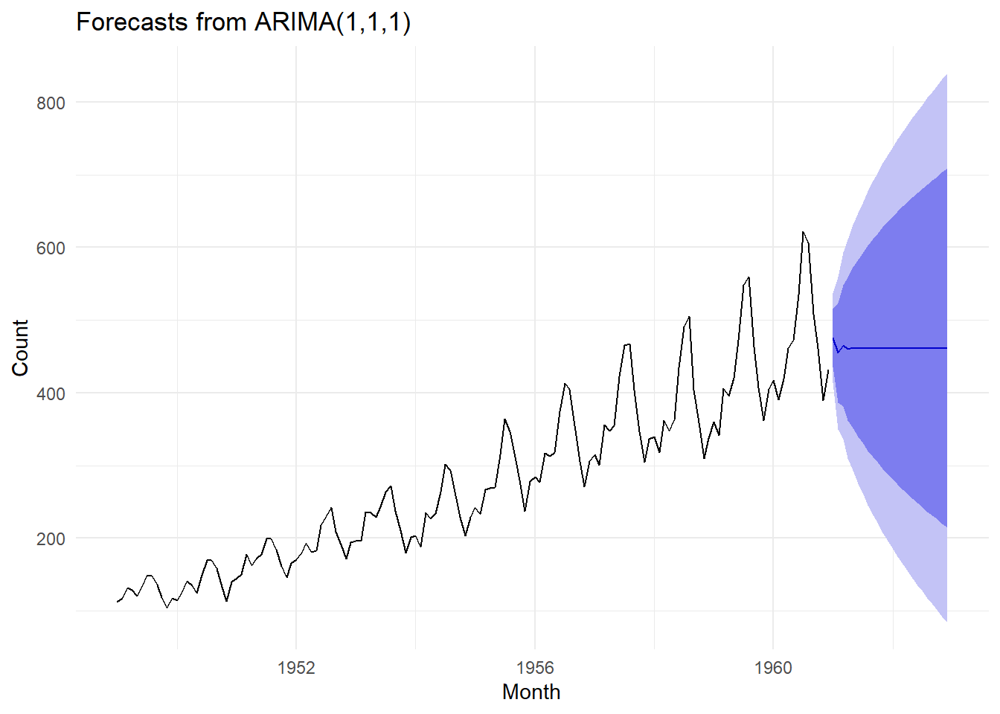
AirPassengers series with forecasts and prediction intervals for 24 months.
Ljung-Box test
data: Residuals from ARIMA(1,1,1)
Q* = 231.49, df = 22, p-value < 2.2e-16
Model df: 2. Total lags used: 24NULL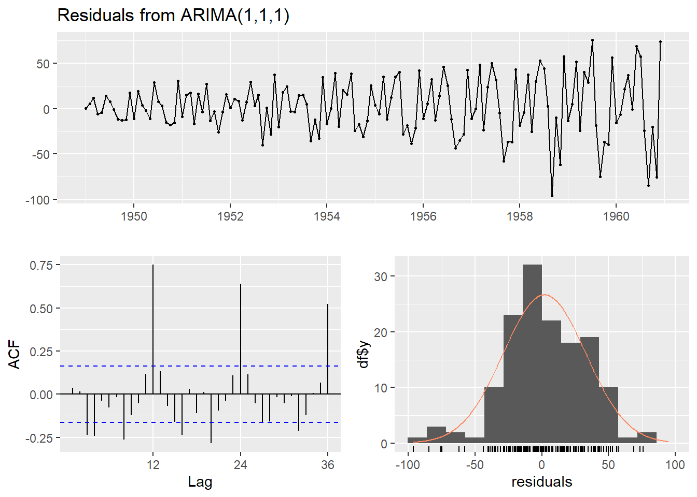
In Figure 10 we can see that the residuals do not look like white noise, this is because the seasonality hasn’t been removed from the data with an ARIMA(1,1,1) model.
The SARIMA(\(p,d,q\))(\(P,D,Q\text{)}_m\) model
\[ \Phi(L^m)\phi(L)(1-L^m)^D(1-L)^dy_t = \Theta(L^m)\theta(L)\varepsilon_t. \]
When we check an ACF plot of the AirPassengers series, we can see clear seasonality.
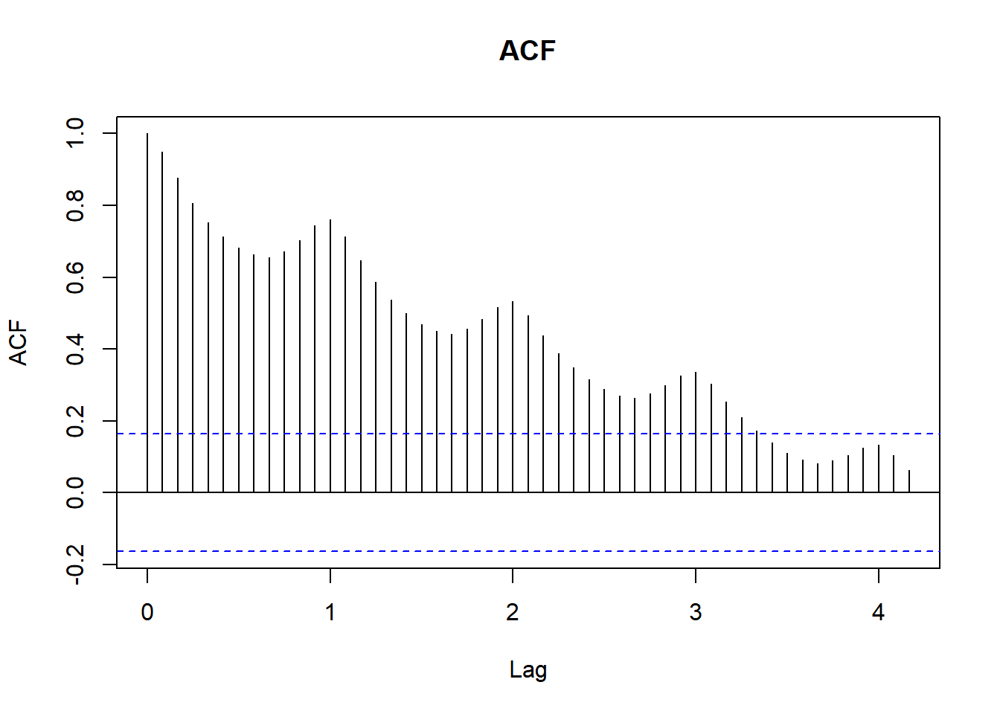
Figure 11 and Figure 10 suggest that we need to model the AirPassengers series with a seasonality component as well.
Click to toggle source code
# Which SARIMA model is the best fit:
best_fit = auto.arima(AirPassengers,
lambda=0,
stepwise=FALSE,
approximation=FALSE)
summary(best_fit)Series: AirPassengers
ARIMA(0,1,1)(0,1,1)[12]
Box Cox transformation: lambda= 0
Coefficients:
ma1 sma1
-0.4018 -0.5569
s.e. 0.0896 0.0731
sigma^2 = 0.001371: log likelihood = 244.7
AIC=-483.4 AICc=-483.21 BIC=-474.77
Training set error measures:
ME RMSE MAE MPE MAPE MASE
Training set 0.05140418 10.15504 7.357553 -0.004079016 2.623636 0.229706
ACF1
Training set -0.03689673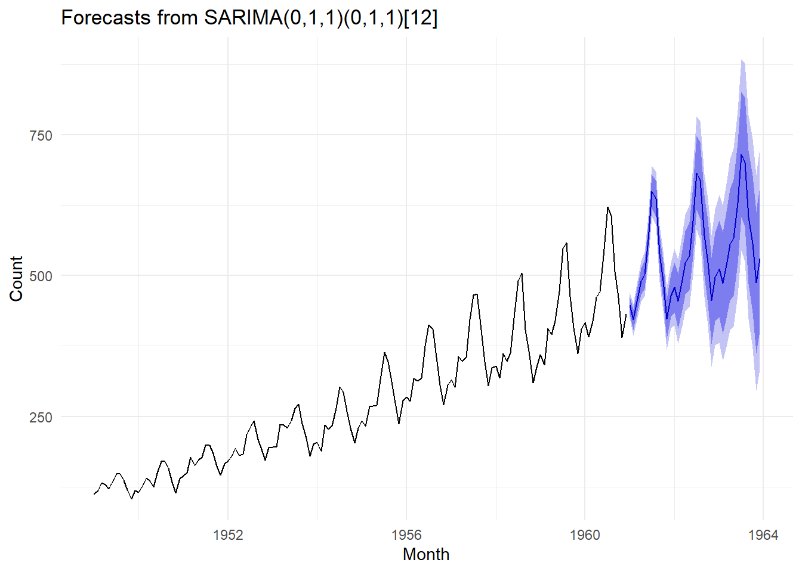
Figure 12 carries the seasonal shape forward while the intervals widen. This is the behaviour a seasonal model is fitted for.
Conditional Variance Models
Spectral Analysis
Section 2
Data Statement
[cite: 1]
Teaching Session Summaries
[cite: 1]
Worked Tutorials & Software Implementations
[cite: 1]
Topic Exploration
[cite: 1]
Projects
Overview
This section contains four substantial projects spanning Section 1 and Section 2[cite: 1].
| Project | Section | Project Type | Focus Area | Link |
|---|---|---|---|---|
| Project 1 | Section 1 | Simulation Study | Model Comparison | Summary[cite: 1] |
| Project 2 | Section 1 | R Package Implementation | Computational Programming | Summary[cite: 1] |
| Project 3 | Section 2 | Shiny Application | Interactive Visualization | Summary[cite: 1] |
| Project 4 | Section 2 | Exploratory Data Analysis | Real-World Data | Summary[cite: 1] |
Project 1
- Section & Topic:[cite: 1]
- Project Type: (Implementation / Shiny App / Exploration / Simulation)[cite: 1]
- Question / Aim:[cite: 1]
- Data Used: (Include source details if real-world data)[cite: 1]
- Methods Used:[cite: 1]
Key Findings
[cite: 1]
Reflections
- What I would do differently next time:[cite: 1]
Links
- Detailed Analysis & Code Script[cite: 1]
Project 2
- Section & Topic:[cite: 1]
- Project Type: (Implementation / Shiny App / Exploration / Simulation)[cite: 1]
- Question / Aim:[cite: 1]
- Data Used: (Include source details if real-world data)[cite: 1]
- Methods Used:[cite: 1]
Key Findings
[cite: 1]
Reflections
- What I would do differently next time:[cite: 1]
Links
- Detailed Analysis & Code Script[cite: 1]
Project 3
- Section & Topic:[cite: 1]
- Project Type: (Implementation / Shiny App / Exploration / Simulation)[cite: 1]
- Question / Aim:[cite: 1]
- Data Used: (Include source details if real-world data)[cite: 1]
- Methods Used:[cite: 1]
Key Findings
[cite: 1]
Reflections
- What I would do differently next time:[cite: 1]
Links
- Detailed Analysis & Code Script[cite: 1]
Project 4
- Section & Topic:[cite: 1]
- Project Type: (Implementation / Shiny App / Exploration / Simulation)[cite: 1]
- Question / Aim:[cite: 1]
- Data Used: (Include source details if real-world data)[cite: 1]
- Methods Used:[cite: 1]
Key Findings
[cite: 1]
Reflections
- What I would do differently next time:[cite: 1]
Links
- Detailed Analysis & Code Script[cite: 1]
Journal
This journal documents my continuous learning progress throughout the course[cite: 1].
- View Chronological Entries[cite: 1]
Appendix
R Code & Scripts
scripts/simulation-study.Rscripts/shiny-app/app.R
Data Access & Repositories
- Raw Data Files & Data Access Instructions[cite: 1]
Computational Notebooks
- Extended Analysis Reports[cite: 1]